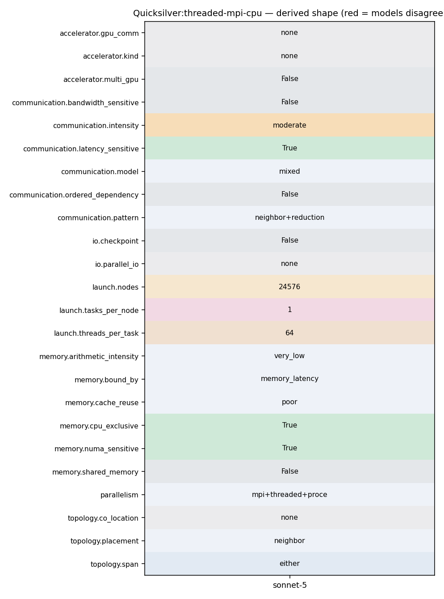

srun -N<nodes> -n<ranks> ./qs -i <input>.inp -X.. -Y.. -Z.. -I.. -J.. -K.. -n <nParticles> (OMP_NUM_THREADS=<threads>)
19 MpiCommObject::MpiCommObject(const MPI_Comm& comm, const DecompositionObject& ddc) 20 :_comm(comm), 21 _ddc(ddc) 22 { 23 } 24 25 void MpiCommObject::exchange(MeshPartition::MapType& cellInfoMap, 26 const vector<int>& nbrDomain, 27 vector<set<Long64> > sendSet, 28 vector<set<Long64> > recvSet) 29 30 { 31 int nRanks, myRank; 32 mpiComm_rank(MPI_COMM_WORLD, &myRank); 33 mpiComm_size(MPI_COMM_WORLD, &nRanks); 34 mpiBarrier(MPI_COMM_WORLD); 35 36 qs_assert(sendSet.size() == nbrDomain.size()); 37 qs_assert(recvSet.size() == nbrDomain.size()); 38 39 const int xTag = 13; 40 int nRequest = 2*nbrDomain.size(); 41 int nItemsToSend = 0; 42 int nItemsToRecv = 0;
16 // 17 // Type Definitions 18 // 19 struct MC_MPI_Send_Mode 20 { 21 public: 22 enum Enum 23 { 24 Send, 25 Ssend, 26 Bsend, 27 Rsend, 28 Isend, 29 Issend, 30 Ibsend, 31 Irsend 32 }; 33 }; 34 35 struct particle_buffer_base_type
55 { 56 CellInfo* recvPtr = recvBuf; 57 for (unsigned ii=0; ii<nbrDomain.size(); ++ii) 58 { 59 const int sourceRank = _ddc.getRank(nbrDomain[ii]); 60 const int nRecv = recvSet[ii].size(); 61 mpiIrecv(recvPtr, nRecv, datatype, sourceRank, xTag, _comm, request+2*ii); 62 recvPtr += nRecv; 63 } 64 } 65 66 // assemble buffers and send 67 { 68 int count = 0; 69 CellInfo* sendPtr = sendBuf; 70 for (unsigned ii=0; ii<nbrDomain.size(); ++ii) 71 { 72 for (auto iter=sendSet[ii].begin(); iter!=sendSet[ii].end(); ++iter) 73 sendBuf[count++] = cellInfoMap[*iter]; 74 const int targetRank = _ddc.getRank(nbrDomain[ii]); 75 const int nSend = sendSet[ii].size(); 76 mpiIsend(sendPtr, nSend, datatype, targetRank, xTag, _comm, request+(2*ii)+1); 77 sendPtr += nSend; 78 }
43 tal.push_back(_balanceTask[0]._numSegments); 44 vector<uint64_t> sum(tal.size()); 45 46 mpiAllreduce(&tal[0], &sum[0], tal.size(), MPI_UINT64_T, MPI_SUM, monteCarlo->processor_info->comm_mc_world); 47 48 int index = 0; 49 _balanceTask[0]._absorb = sum[index++];
58 { 59 const int sourceRank = _ddc.getRank(nbrDomain[ii]); 60 const int nRecv = recvSet[ii].size(); 61 mpiIrecv(recvPtr, nRecv, datatype, sourceRank, xTag, _comm, request+2*ii); 62 recvPtr += nRecv; 63 } 64 } 65 66 // assemble buffers and send 67 { 68 int count = 0; 69 CellInfo* sendPtr = sendBuf; 70 for (unsigned ii=0; ii<nbrDomain.size(); ++ii) 71 { 72 for (auto iter=sendSet[ii].begin(); iter!=sendSet[ii].end(); ++iter) 73 sendBuf[count++] = cellInfoMap[*iter]; 74 const int targetRank = _ddc.getRank(nbrDomain[ii]); 75 const int nSend = sendSet[ii].size(); 76 mpiIsend(sendPtr, nSend, datatype, targetRank, xTag, _comm, request+(2*ii)+1); 77 sendPtr += nSend; 78 } 79 } 80 81 // wait for comm
43 tal.push_back(_balanceTask[0]._numSegments); 44 vector<uint64_t> sum(tal.size()); 45 46 mpiAllreduce(&tal[0], &sum[0], tal.size(), MPI_UINT64_T, MPI_SUM, monteCarlo->processor_info->comm_mc_world); 47 48 int index = 0; 49 _balanceTask[0]._absorb = sum[index++]; 50 _balanceTask[0]._census = sum[index++]; 51 _balanceTask[0]._escape = sum[index++]; 52 _balanceTask[0]._collision = sum[index++]; 53 _balanceTask[0]._end = sum[index++]; 54 _balanceTask[0]._fission = sum[index++]; 55 _balanceTask[0]._produce = sum[index++]; 56 _balanceTask[0]._scatter = sum[index++]; 57 _balanceTask[0]._start = sum[index++]; 58 _balanceTask[0]._source = sum[index++]; 59 _balanceTask[0]._rr = sum[index++]; 60 _balanceTask[0]._split = sum[index++]; 61 _balanceTask[0]._numSegments = sum[index++]; 62 63 PrintSummary(monteCarlo); 64 65 _balanceCumulative.Add(_balanceTask[0]); 66
210 211 double max_diff_global = 0.0; 212 213 mpiAllreduce(&max_diff, &max_diff_global, 1, MPI_DOUBLE, MPI_MAX, monteCarlo->processor_info->comm_mc_world); 214 215 if( monteCarlo->processor_info->rank == 0 ) 216 {
87 { qs_assert(MPI_Reduce(sendbuf, recvbuf, count, datatype, op, root, comm) == MPI_SUCCESS); } 88 void mpiGather(void *sendbuf, int sendcount, MPI_Datatype sendtype, void *recvbuf, int recvcount, MPI_Datatype recvtype, int root, MPI_Comm comm) 89 { qs_assert(MPI_Gather(sendbuf, sendcount, sendtype, recvbuf, recvcount, recvtype, root, comm) == MPI_SUCCESS); } 90 void mpiBcast( void* buf, int count, MPI_Datatype datatype, int root, MPI_Comm comm) 91 { qs_assert(MPI_Bcast(buf, count, datatype, root, comm) == MPI_SUCCESS); } 92 void mpiIrecv(void *buf, int count, MPI_Datatype datatype, int source, int tag, MPI_Comm comm, MPI_Request *request) 93 { qs_assert(MPI_Irecv(buf, count, datatype, source, tag, comm, request) == MPI_SUCCESS); } 94 void mpiRecv(void *buf, int count, MPI_Datatype datatype, int source, int tag, MPI_Comm comm, MPI_Status *status)
11 12 QS=../../src/qs 13 14 srun -N1 -n1 $QS -i CTS2.inp -X 16 -Y 16 -Z 16 -x 16 -y 16 -z 16 -I 1 -J 1 -K 1 -n 40960 > CTS2_01.out 15 srun -N1 -n2 $QS -i CTS2.inp -X 32 -Y 16 -Z 16 -x 32 -y 16 -z 16 -I 2 -J 1 -K 1 -n 81920 > CTS2_02.out 16 srun -N1 -n4 $QS -i CTS2.inp -X 32 -Y 32 -Z 16 -x 32 -y 32 -z 16 -I 2 -J 2 -K 1 -n 163840 > CTS2_04.out 17 srun -N1 -n8 $QS -i CTS2.inp -X 32 -Y 32 -Z 32 -x 32 -y 32 -z 32 -I 2 -J 2 -K 2 -n 327680 > CTS2_08.out 18 srun -N1 -n16 $QS -i CTS2.inp -X 64 -Y 32 -Z 32 -x 64 -y 32 -z 32 -I 4 -J 2 -K 2 -n 655360 > CTS2_16.out 19 srun -N1 -n32 $QS -i CTS2.inp -X 64 -Y 64 -Z 32 -x 64 -y 64 -z 32 -I 4 -J 4 -K 2 -n 1310720 > CTS2_32.out 20 srun -N1 -n36 $QS -i CTS2.inp -X 48 -Y 48 -Z 64 -x 48 -y 48 -z 64 -I 3 -J 3 -K 4 -n 1474560 > CTS2_36.out 21
11 12 QS=../../../src/qs 13 14 srun -N24576 -n24576 $QS -i Coral2_P1.inp -X 768 -Y 512 -Z 256 -x 768 -y 512 -z 256 -I 48 -J 32 -K 16 -n 4026531840 > p1n24576t64 15 srun -N16384 -n16384 $QS -i Coral2_P1.inp -X 512 -Y 512 -Z 256 -x 512 -y 512 -z 256 -I 32 -J 32 -K 16 -n 2684354560 > p1n16384t64 16 srun -N8192 -n8192 $QS -i Coral2_P1.inp -X 512 -Y 256 -Z 256 -x 512 -y 256 -z 256 -I 32 -J 16 -K 16 -n 1342117280 > p1n08192t64 17 srun -N4096 -n4096 $QS -i Coral2_P1.inp -X 256 -Y 256 -Z 256 -x 256 -y 256 -z 256 -I 16 -J 16 -K 16 -n 671088640 > p1n04092t64 18 srun -N2048 -n2048 $QS -i Coral2_P1.inp -X 256 -Y 256 -Z 128 -x 256 -y 256 -z 128 -I 16 -J 16 -K 8 -n 335544320 > p1n02048t64 19 srun -N1024 -n1024 $QS -i Coral2_P1.inp -X 256 -Y 128 -Z 128 -x 256 -y 128 -z 128 -I 16 -J 8 -K 8 -n 167772160 > p1n01024t64 20 srun -N512 -n512 $QS -i Coral2_P1.inp -X 128 -Y 128 -Z 128 -x 128 -y 128 -z 128 -I 8 -J 8 -K 8 -n 83886080 > p1n00512t64 21 srun -N256 -n256 $QS -i Coral2_P1.inp -X 128 -Y 128 -Z 64 -x 128 -y 128 -z 64 -I 8 -J 8 -K 4 -n 41943040 > p1n00256t64 22 srun -N128 -n128 $QS -i Coral2_P1.inp -X 128 -Y 64 -Z 64 -x 128 -y 64 -z 64 -I 8 -J 4 -K 4 -n 20971520 > p1n00128t64 23 srun -N64 -n64 $QS -i Coral2_P1.inp -X 64 -Y 64 -Z 64 -x 64 -y 64 -z 64 -I 4 -J 4 -K 4 -n 10485760 > p1n00064t64 24 srun -N32 -n32 $QS -i Coral2_P1.inp -X 64 -Y 64 -Z 32 -x 64 -y 64 -z 32 -I 4 -J 4 -K 2 -n 5242880 > p1n00032t64 25 srun -N16 -n16 $QS -i Coral2_P1.inp -X 64 -Y 32 -Z 32 -x 64 -y 32 -z 32 -I 4 -J 2 -K 2 -n 2621440 > p1n00016t64 26 srun -N8 -n8 $QS -i Coral2_P1.inp -X 32 -Y 32 -Z 32 -x 32 -y 32 -z 32 -I 2 -J 2 -K 2 -n 1310720 > p1n00008t64 27 srun -N4 -n4 $QS -i Coral2_P1.inp -X 32 -Y 32 -Z 16 -x 32 -y 32 -z 16 -I 2 -J 2 -K 1 -n 655360 > p1n00004t64 28 srun -N2 -n2 $QS -i Coral2_P1.inp -X 32 -Y 16 -Z 16 -x 32 -y 16 -z 16 -I 2 -J 1 -K 1 -n 327680 > p1n00002t64 29 srun -N1 -n1 $QS -i Coral2_P1.inp -X 16 -Y 16 -Z 16 -x 16 -y 16 -z 16 -I 1 -J 1 -K 1 -n 163840 > p1n00001t64
11 12 QS=../../../src/qs 13 14 srun -N24576 -n24576 $QS -i Coral2_P1.inp -X 768 -Y 512 -Z 256 -x 768 -y 512 -z 256 -I 48 -J 32 -K 16 -n 4026531840 > p1n24576t64 15 srun -N16384 -n16384 $QS -i Coral2_P1.inp -X 512 -Y 512 -Z 256 -x 512 -y 512 -z 256 -I 32 -J 32 -K 16 -n 2684354560 > p1n16384t64 16 srun -N8192 -n8192 $QS -i Coral2_P1.inp -X 512 -Y 256 -Z 256 -x 512 -y 256 -z 256 -I 32 -J 16 -K 16 -n 1342117280 > p1n08192t64 17 srun -N4096 -n4096 $QS -i Coral2_P1.inp -X 256 -Y 256 -Z 256 -x 256 -y 256 -z 256 -I 16 -J 16 -K 16 -n 671088640 > p1n04092t64
3 #Problem 1: 4 5 # 1 rank per node 6 # 64 threads per rank 7 # 4096 mesh elements per node 8 # 40 particles per mesh element -> 163840 particles per node 9 10 export OMP_NUM_THREADS=64 11 12 QS=../../../src/qs 13
12 OpenMP and MPI are used for parallelization. A GPU version is 13 available. Unified memory is assumed. 14 15 Performance of Quicksilver is likely to be dominated by latency bound 16 table look-ups, a highly branchy/divergent code path, and poor 17 vectorization potential. 18 19 For more information, visit the 20 [LLNL co-design pages.](https://codesign.llnl.gov/quicksilver.php)
12 OpenMP and MPI are used for parallelization. A GPU version is 13 available. Unified memory is assumed. 14 15 Performance of Quicksilver is likely to be dominated by latency bound 16 table look-ups, a highly branchy/divergent code path, and poor 17 vectorization potential. 18 19 For more information, visit the 20 [LLNL co-design pages.](https://codesign.llnl.gov/quicksilver.php)
12 OpenMP and MPI are used for parallelization. A GPU version is 13 available. Unified memory is assumed. 14 15 Performance of Quicksilver is likely to be dominated by latency bound 16 table look-ups, a highly branchy/divergent code path, and poor 17 vectorization potential. 18 19 For more information, visit the 20 [LLNL co-design pages.](https://codesign.llnl.gov/quicksilver.php)
27 28 # (Per Node) 64 MPI x 1 Threads - Thread Funneled 29 export OMP_NUM_THREADS=1 30 time aprun -r 4 -n 128 -d 1 -j 1 -cc depth ./qs \ 31 --lx=800 --ly=400 --lz=400 --nx=40 --ny=20 --nz=20 --xDom=8 --yDom=4 --zDom=4 --nParticles=4000000 \ 32 -i Input/homogeneousProblem_v5_ts.inp 2>&1 | tee qs.trinity.Node0002.n0128.d001.j01-ts.out 33
27 28 # (Per Node) 64 MPI x 1 Threads - Thread Funneled 29 export OMP_NUM_THREADS=1 30 time aprun -r 4 -n 128 -d 1 -j 1 -cc depth ./qs \ 31 --lx=800 --ly=400 --lz=400 --nx=40 --ny=20 --nz=20 --xDom=8 --yDom=4 --zDom=4 --nParticles=4000000 \ 32 -i Input/homogeneousProblem_v5_ts.inp 2>&1 | tee qs.trinity.Node0002.n0128.d001.j01-ts.out 33 34 # (Per Node) 32 MPI x 2 Threads - Thread Funneled 35 export OMP_NUM_THREADS=2 36 time aprun -r 4 -n 64 -d 2 -j 1 -cc depth ./qs \ 37 --lx=400 --ly=400 --lz=400 --nx=40 --ny=20 --nz=20 --xDom=4 --yDom=4 --zDom=4 --nParticles=4000000 \ 38 -i Input/homogeneousProblem_v5_ts.inp 2>&1 | tee qs.trinity.Node0002.n0064.d002.j01-ts.out 39 40 # (Per Node) 16 MPI x 4 Threads - Thread Funneled 41 export OMP_NUM_THREADS=4 42 time aprun -r 4 -n 32 -d 4 -j 1 -cc depth ./qs \ 43 --lx=400 --ly=400 --lz=200 --nx=40 --ny=20 --nz=20 --xDom=4 --yDom=4 --zDom=2 --nParticles=4000000 \ 44 -i Input/homogeneousProblem_v5_ts.inp 2>&1 | tee qs.trinity.Node0002.n0032.d004.j01-ts.out 45
30 # enable or disable various code features such as MPI, OpenMP, etc. 31 # The following pre-processor DEFINES are recognized: 32 # 33 # -DHAVE_MPI Define HAVE_MPI to enable MPI feartures in 34 # Quicksilver. If this is not defined, the MPI 35 # functions will be replaced with stub implmentations 36 # and the code will run on a single "rank". 37 # 38 # -DHAVE_ASYNC_MPI Define this if your MPI has support for non-blocking 39 # collectives. (Quicksilver will use MPI_Iallreduce 40 # in the test-for-done algorithm.) 41 # 42 # -DHAVE_CUDA Define this to enable the Cuda build. 43 # 44 # -DHAVE_HIP Define this to enable the HIP build. Quicksilver assumes 45 # that HIP is targeting AMD GPUs. 46 # 47 # -DHAVE_OPENMP Use this define to generate a code which uses OpenMP 48 # threads. It will also be necessary to add the appropriate 49 # compiler flags to CXXFLAGS and LDFLAGS, which vary 50 # by compiler, such as '-qopenmp -pthread' for Intel, or 51 # '-fopenmp' for Gnu. Defining HAVE_OPENMP will use 52 # only features in OpenMP 3.x. 53 #
7 # 4096 mesh elements per rank (16^3) 8 # 10 particles per mesh element -> 40960 particles per rank 9 10 export OMP_NUM_THREADS=1 11 12 QS=../../src/qs 13 14 srun -N1 -n1 $QS -i CTS2.inp -X 16 -Y 16 -Z 16 -x 16 -y 16 -z 16 -I 1 -J 1 -K 1 -n 40960 > CTS2_01.out 15 srun -N1 -n2 $QS -i CTS2.inp -X 32 -Y 16 -Z 16 -x 32 -y 16 -z 16 -I 2 -J 1 -K 1 -n 81920 > CTS2_02.out 16 srun -N1 -n4 $QS -i CTS2.inp -X 32 -Y 32 -Z 16 -x 32 -y 32 -z 16 -I 2 -J 2 -K 1 -n 163840 > CTS2_04.out 17 srun -N1 -n8 $QS -i CTS2.inp -X 32 -Y 32 -Z 32 -x 32 -y 32 -z 32 -I 2 -J 2 -K 2 -n 327680 > CTS2_08.out 18 srun -N1 -n16 $QS -i CTS2.inp -X 64 -Y 32 -Z 32 -x 64 -y 32 -z 32 -I 4 -J 2 -K 2 -n 655360 > CTS2_16.out 19 srun -N1 -n32 $QS -i CTS2.inp -X 64 -Y 64 -Z 32 -x 64 -y 64 -z 32 -I 4 -J 4 -K 2 -n 1310720 > CTS2_32.out 20 srun -N1 -n36 $QS -i CTS2.inp -X 48 -Y 48 -Z 64 -x 48 -y 48 -z 64 -I 3 -J 3 -K 4 -n 1474560 > CTS2_36.out 21
55 { 56 CellInfo* recvPtr = recvBuf; 57 for (unsigned ii=0; ii<nbrDomain.size(); ++ii) 58 { 59 const int sourceRank = _ddc.getRank(nbrDomain[ii]); 60 const int nRecv = recvSet[ii].size(); 61 mpiIrecv(recvPtr, nRecv, datatype, sourceRank, xTag, _comm, request+2*ii); 62 recvPtr += nRecv; 63 } 64 } 65 66 // assemble buffers and send 67 { 68 int count = 0; 69 CellInfo* sendPtr = sendBuf; 70 for (unsigned ii=0; ii<nbrDomain.size(); ++ii) 71 { 72 for (auto iter=sendSet[ii].begin(); iter!=sendSet[ii].end(); ++iter) 73 sendBuf[count++] = cellInfoMap[*iter]; 74 const int targetRank = _ddc.getRank(nbrDomain[ii]); 75 const int nSend = sendSet[ii].size(); 76 mpiIsend(sendPtr, nSend, datatype, targetRank, xTag, _comm, request+(2*ii)+1); 77 sendPtr += nSend; 78 }
44 does not support this, it may be disabled by setting the mpiThreadMultiple 45 option within the deck to 0.[ mpiThreadMultiple has ben disable in QS ] 46 47 Also, that particular test problem requires the user to specify the 48 number of I, J, and K ranks such that their product equals the number 49 of MPI processes requested: Thus a 4 mpi process run of this input deck 50 would look like: 51 52 srun -n4 ./qs -i Input/homogeneousProblem_v3.inp -I 2 -J 2 -K 1 53 54 And an 8 MPI process run could look like: 55 56 srun -n8 ./qs -i Input/homogeneousProblem_v3.inp -I 2 -J 2 -K 2 57 58 59 -------------------------------------------------------------------------------